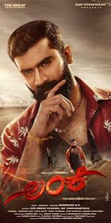
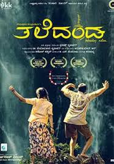
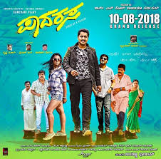
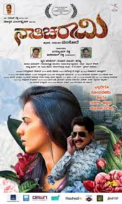

Vijay Kumar Basavarajaiah (17 July 1983 – 15 June 2021), known by his stage name Sanchari Vijay, was an Indian actor known for his work in Kannada cinema. He began his career as a stage actor.He trained on stage from Sanchari Theatre, a culture centre with its own drama troupe, based in Bangalore. For his portrayal of a transgender person in the Kannada film Naanu Avanalla...Avalu (2014), Vijay was awarded the National Film Award for Best Actor at the 62nd National Film Awards. He also received the Karnataka State Film Award for Best Actor and the Filmfare Critics Award for Best Actor – Kannada for the performance. He received praise for his performances in Killing Veerappan (2016) and Nathicharami (2018). In a career spanning ten years, he appeared in 25 films, before his death from a motorcycle crash in 2021.
|  | |
|  | |
|  | |
|  |